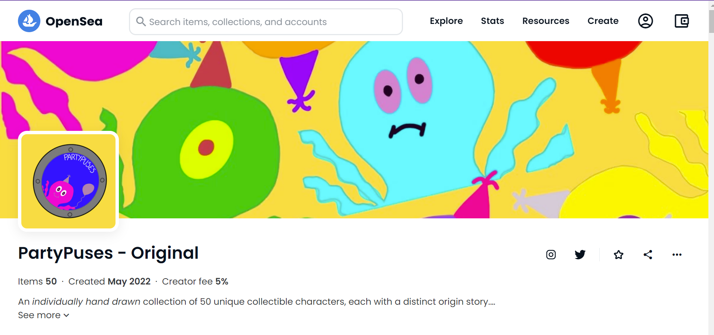

PartyPuses - NFT
In order to enhance my design skills outside of my university studies I decided to create my own collection of unique NFTs, drawing them all myself and creating individual stories for each one. I really enjoyed the process of coming up with an NFT concept from scratch and then going on to design 50 unique characters using design tools on my iPad.


After completing the designing and drawing of the different PartyPuses, I then decided that to make my project stand out I would create a unique short story to go with each. I looked at the designs that I had come up with for each Octopus and then used my imagination to think of different ways that they could have ended up looking the way they did.


Then I connected these drawings and their stories and came up with a unique name for each one. Although I didn't end up selling any of these due to the crash in crypto-currency, the overall experience taught me a lot about design and the forever changing technical industry. I did a lot of research into other NFTs and what was popular and selling, which is what led me to choose a fun animal for the basis of my product. I enjoyed looking into trends and user patterns as much as I could to try and establish a basis for my project that would make them as popular as possible.